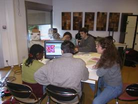

|
SylvoPast, un jeu de rôles sur le sylvopastoralisme
et la prévention des incendies en région méditerranéenne
Michel Etienne (Inra)
Motivation de la création
 Le jeu a été
créé dans un but pédagogique afin de rendre plus
interactives des formations sur le sylvopastoralisme
prévues pour des agents de l'ONF. Il s'agissait de leur
faire comprendre la diversité des points de vue des
usagers sur la foret et de les aider dans la négociation
avec ces usagers lors de la mise en place d'aménagements
sylvopastoraux dans le cadre de la prévention des
incendies en foret méditerranéenne.
Description et spécificité
La foret est représentée par une grille spatiale de 100
parcelles décrivant la structure de la végétation selon
3 strates (arbre, arbuste, herbe). Le ou les
participants jouant le rôle de l'éleveur définissent le
circuit et le calendrier de pâturage de leur troupeau
afin de satisfaire au mieux ses besoins. Ils peuvent en
augmenter l'effectif et sont redevables d'un droit de
pâturage. Le ou les participants jouant le rôle du
forestier définissent les objectifs prioritaires
affectés au massif forestier (réduction du risque
d'incendie, diversité du paysage, surface en foret
productive). Le ou les participants jouant le rôle des
chasseurs (de perdrix et/ou de sangliers) choisissent
l'intensité de prélèvement et les lieux de chasse.
Ensuite, les joueurs doivent décider ensemble de comment
aménager la foret afin quelle remplisse au mieux les
objectifs fixés en intervenant sur les parcelles les
plus stratégiques. A la fin de chaque tour de jeu, la
négociation porte sur l'intervention a réaliser (semer,
débroussailler, reboiser, exploiter), la localisation de
la parcelle et le financement des travaux. Au bout d'un
certain nombre de tours, un incendie est allumé au
hasard dans une parcelle embroussaillée et ses
conséquences sont simulées. Le jeu combine a la fois des
pas de temps saisonniers (chasse, pâturage) et un pas de
temps annuel (aménagement). Ce dernier correspond
obligatoirement a une phase collective dont la durée est
imposée. Le jeu est basé sur un modèle informatique qui
simule les dynamiques d'embroussaillement et de
propagation du feu et met l'accent sur la possibilité de
disposer d'un éventail de "points de vue" sur les
ressources. Un effort particulier a été fourni afin de
disposer de fonctionnalités permettant un débriefing à
chaud particulièrement riche (dynamique des indicateurs
quantitatifs, enregistrement automatique des actes
techniques, simulation en accéléré des parties jouées).
Mise en œuvre
Le jeu a été utilisé depuis janvier 2001 avec de vrais
acteurs dans la version éleveur-forestier au cours de 32
parties, complétées par 75 parties réalisées avec des
étudiants agronome, forestiers, zootechniciens,
écologues ou géographes. Depuis septembre 2003, la
version éleveur-forestier-chasseurs est opérationnelle
et a été utilisée 30 fois avec des étudiants.
Références
- Etienne M. 2003. SYLVOPAST a multiple target
role-playing game to assess negotiation processes in
sylvopastoral management planning. Journal
of Artificial Societies & Social Simulations
6(2)
- Etienne M. 2005. Modélisation daccompagnement et
aménagement forestier. In : Approches participatives
de la gestion forestière, Chauvin C. (ed), Cemagref,
Paris
Pour en savoir plus, contactez
l'auteur.
|
|